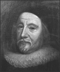
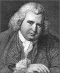
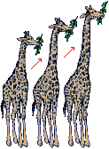

|
 A big believer in creationism was James Ussher, an archbishop of the 1600's. Using the Bible and modern history, he calculated that the time of creation was October 23, 4004 BC. Dr. Charles Lightfoot "helped" that theory by proclaiming that it was 9:00 AM October 23, 4004 BC. That was what was believed (by most everyone) for quite a while. Erasmus Darwin was Charles Darwin's Grandfather. He was a combination poet, doctor, inventor, and scientist. He thought evolution did occur, even on humans. He was very careful to hide his thoughts in poems or other silent things. Whatever caused evolution, he didn't know it. Jean Babtiste de Lamark was the first evolutionist who went very public with his theories. He was very confident. Sadly, his views and ideas about what caused evolution where incorrect. His theory was this: Imagine there was a time when giraffes had very short necks, they looked really like a type of deer. These giraffes, living in the Amazon, eat leaves. Once all the lower leaves are eaten, the giraffes stretch their necks to reach the higher leaves. In doing so, their necks get very slightly longer. This trait they then pass on to their kids, who grow their necks a bit longer, and so on, until the giraffes are what we see today. Even though this was the wrong view, Lamark had hit a spot with the idea of animals passing on traits to their young. |